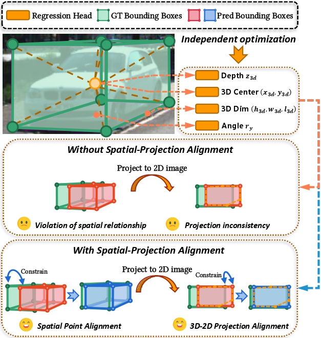
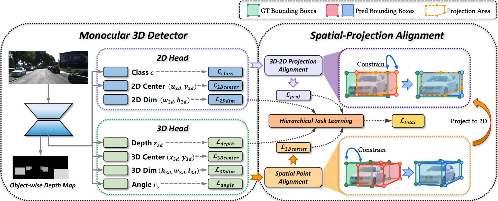
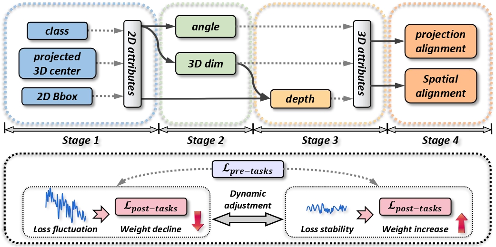
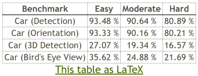
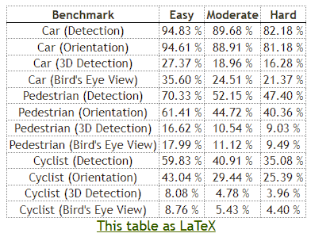

Existing monocular 3D detectors typically tame the pronounced nonlinear regression of 3D bounding box through decoupled prediction paradigm, which employs multiple branches to estimate geometric center, depth, dimensions, and rotation angle separately. Although this decoupling strategy simplifies the learning process, it inherently ignores the geometric collaborative constraints between different attributes, resulting in the lack of geometric consistency prior, thereby leading to suboptimal performance.
To address this issue, we propose novel Spatial-Projection Alignment (SPAN) with two pivotal components: (i) Spatial Point Alignment enforces an explicit global spatial constraint between predicted and ground-truth 3D bounding boxes, thereby rectifying spatial drift caused by decoupled attribute regression. (ii) 3D-2D Projection Alignment ensures that the projected 3D box is aligned tightly within its corresponding 2D detection bounding box on the image plane, mitigating projection misalignment overlooked in previous works.
🎯 Key Results: Extensive experiments demonstrate that the proposed method can be easily integrated into any established monocular 3D detector and delivers significant performance improvements. Our method achieves +0.92% improvement in moderate AP3D on KITTI validation set with MonoDGP baseline, without any additional inference overhead.
Enforces explicit global spatial constraints by aligning eight corner coordinates of predicted 3D boxes with ground-truth corners, rectifying spatial drift.
Ensures projected 3D boxes align tightly with their corresponding 2D detection boxes, satisfying fundamental perspective projection constraints.
Progressive training strategy that dynamically adjusts loss weights, ensuring stable optimization and preventing early-stage error propagation.
Can be seamlessly integrated into any monocular 3D detector without additional inference overhead or architectural modifications.

Figure 1: Previous methods typically neglect the geometric collaborative constraints between different attributes, resulting in spatial errors and projection misalignment. Our method aligns 3D corners and matches 3D projections with 2D boxes to improve detection accuracy and consistency.
Most existing monocular 3D detection frameworks employ a decoupled regression paradigm, wherein seven degrees-of-freedom parameters are predicted by separate heads. Although this factorization streamlines learning objectives, its intrinsic disregard for geometric collaborative constraints has gradually become a major bottleneck that impedes further performance gains.
SPAN addresses this gap by explicitly integrating Spatial-Projection Alignment into an end-to-end framework. Our central idea is to impose geometrically collaborative constraints on every set of 3D bounding box attributes and to optimize them jointly to enhance both spatial and projection coherence.

Figure 2: Overview of SPAN. The proposed method can be seamlessly plugged into the training pipeline of any monocular 3D detector. It computes eight corner points of predicted 3D boxes, applies Spatial Point Alignment loss, projects corners onto 2D plane, and uses 3D-2D Projection Alignment loss to ensure geometric consistency.
The Spatial Point Alignment loss constrains the eight corner coordinates of predicted 3D bounding boxes to align with ground-truth corners. We employ the MGIoU scheme, which breaks the 3D overlap problem down into three simpler one-dimensional projection problems, computing 1D GIoU for each axis and averaging to obtain the final 3D MGIoU.
The 3D-2D Projection Alignment ensures that the projected 3D box aligns tightly within its corresponding 2D detection bounding box. We project the eight corner points of predicted 3D boxes onto the image plane using camera intrinsics, compute the minimal enclosing rectangle, and measure its overlap with the ground-truth 2D box using 2D GIoU.

Figure 3: Illustration of the task hierarchy. The overall training process is divided into four sequential stages. Under the dynamic adjustment of Hierarchical Task Learning, a subsequent stage can only receive a significant loss weight once its pre-tasks have been trained to a stable state.
Focuses on object classification, 2D box localization, and projected center regression.
Addresses 3D dimension and rotation angle regression, treating Stage 1 tasks as prerequisites.
Performs depth estimation, which relies on geometric relationships between 2D box attributes from Stage 1 and 3D attributes from Stage 2.
Introduces Spatial-Projection Alignment losses, which depend on all preceding 3D attribute regression tasks. This staged design ensures training stability throughout the optimization process.
We evaluate SPAN on the widely used KITTI benchmark, which contains 7,481 training images and 7,518 test images, covering three object categories: Car, Pedestrian, and Cyclist.
| Method | Extra Data | Easy | Mod. | Hard |
|---|---|---|---|---|
| KITTI Test Set - Car Category (AP3D|R40) | ||||
| MonoDGP | None | 26.35 | 18.72 | 15.97 |
| MonoDGP + SPAN | None | 27.02 | 19.30 | 16.49 |
| KITTI Val Set - Car Category (AP3D|R40) | ||||
| MonoDETR | None | 28.84 | 20.61 | 16.38 |
| MonoDETR + SPAN | None | 28.99 | 21.22 | 17.08 |
| MoVis | None | 28.46 | 20.77 | 17.70 |
| MoVis + SPAN | None | 28.65 | 21.44 | 18.52 |
| MonoDGP | None | 30.76 | 22.34 | 19.02 |
| MonoDGP + SPAN | None | 30.98 | 23.26 | 20.17 |
💡 Key Insight: SPAN consistently improves performance across different baseline models. On MonoDGP, our method achieves +0.92% improvement in moderate AP3D on the validation set and +0.58% on the test set, demonstrating the effectiveness and generalizability of the proposed approach.
Our ablation study systematically evaluates the contribution of each component. The best AP3D under three difficulty levels gains an increase of 0.36%, 0.92% and 1.15%, respectively, validating the effectiveness of each technique utilized in our proposed method.

Figure 4: Official KITTI test set results for Car category.

Figure 5: Official KITTI test set results for all categories (Car, Pedestrian, Cyclist).
@misc{wang2025spanspatialprojectionalignmentmonocular,
title={SPAN: Spatial-Projection Alignment for Monocular 3D Object Detection},
author={Yifan Wang and Yian Zhao and Fanqi Pu and Xiaochen Yang and Yang Tang and Xi Chen and Wenming Yang},
year={2025},
eprint={2511.06702},
archivePrefix={arXiv},
primaryClass={cs.CV},
url={https://arxiv.org/abs/2511.06702},
}